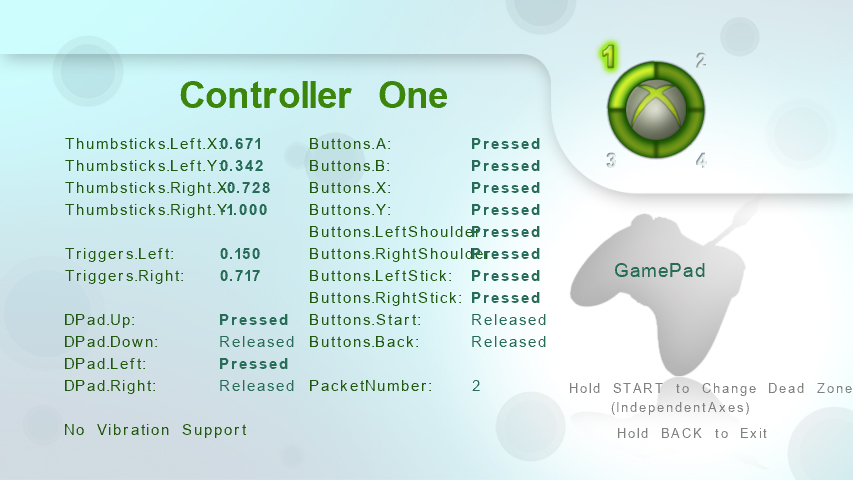

Input Reporter
Ported from Microsoft's XNA 4.0 Input Reporter.
Source for this sample on GitHub ↗

Play ▸Opens in a new tab and runs in this browser. Click the canvas first so it receives the keyboard.
About this sample
Input Reporter displays the complete XNA GamePadState and
GamePadCapabilities data for up to four connected controllers. The Ring of
Light shows which devices are connected, and pressing a digital button selects the first
active controller whose live values should be shown.
Axes, triggers, D-pad directions, buttons, packet numbers, controller type and vibration support all use the same names as the XNA API. Unsupported controls are dimmed, while active values use a bold font, making this a useful way to inspect how different accessories map to XNA's common gamepad model.
START and BACK use the sample's charging switches: they must stay held for two seconds before changing the dead-zone mode or exiting. This leaves every button available for inspection without immediately triggering an application action.
Controls
| Action | Keyboard | Gamepad |
|---|---|---|
| Select an active controller | — | Press any digital button |
| Toggle dead-zone mode | Space | Hold Start for 2 seconds |
| Exit | Esc | Hold Back for 2 seconds |
In the browser, exiting ends the sample rather than closing the tab.